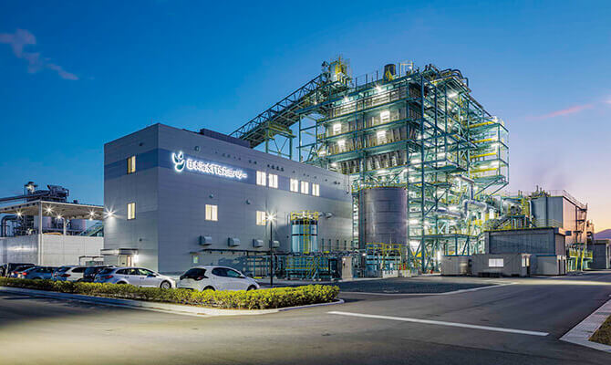

環境ENVIRONMENT

脱炭素の推進
りんかい日産建設では、我が国が目指す2050年GHG（温室効果ガス）実質排出ゼロの実現に向けた取り組みを推進しています。
カーボンニュートラルの推進
当社は、気候変動問題への対応・カーボンニュートラルの実現に対する取り組みを進めるとともに、サステナビリティ経営方針に基づき、TCFD（気候関連財務情報開示タスクフォース）提言に基づく開示に向けて取り組んでいます。
当社は引き続き、TCFDが推奨する気候関連のリスクおよび機会についての4項目の情報を積極的に開示することを予定しており、社会課題への柔軟な対応を示し、企業価値の持続的な向上を推進します。
また開示した情報の要素は2025年度公表予定の次期中期経営計画に組み入れ、具体的に取り組む予定です。さらに、ステークホルダーとの気候変動に関するエンゲージメントの活性化も推進します。
開示内容（概要）
| ガバナンス | ● 経営企画部CSR推進課が気候関連のリスクおよび機会を定量的に評価します。 ● その評価内容を毎月1回、社長を委員長とするサステナビリティ委員会で審議し、審議内容を取締役会で報告します。 |
|---|---|
| 戦略 | ● 調達する製品やサービスは脱炭素化されているものを積極的に選定します。 ● サプライチェーン、バリューチェーン全体で脱炭素化を推進します。 ● 脱炭素化の緩和策に取り組みつつ、建設業本来の業務である国土強靭化や民間の移転・リノベーションなどの適応策を促進します。 ● 建築におけるZEB化などに対する制度活用に柔軟に対応します。 ● 炭素税の導入による環境コストの増大への対策として、建設事業全般における脱炭素化戦略を推進することで、財務へのリスク影響を最小化し、機会を拡大します。 ● 炭素税額、電力価格、電力排出係数、エネルギー比率などは世界情勢などにより変動するため、変動幅を数値化した上で、必要に応じて戦略変更や気候関連シナリオなどの見直し・修正を行います。 |
| リスク管理 | ● 財務への影響の重要度に応じて、緩和／移転／受容／管理を進めます。 ・緩和：当社のみでは困難なため、建設業界を通じて対応します。 ・移転：4°Cシナリオでは保険が契約できなくなるなどのリスクが発生する可能性があるため、制度への注視を続けます。 ・受容：工事収益のブレの範囲内であれば受容します。 ・管理：数量など定量化を行い管理を促進します。 |
| 指標と目標 | ● GHG排出量計算は、GHGプロトコルに従って算出します。 ● GHG排出量は、現時点では全体の約9割を占めるスコープ3が概数であるため、2030年・2050年のGHG排出量より計算される財務インパクトと見比べて検討を行った上で目標を設定します。 ● 建設業では売上高が増えればGHG排出量も増加するため、GHG排出量の管理は「施工高1億円あたりの原単位（t-CO2/億円）」で行います。 |
認証・排出量等
当社では、脱炭素化を推進する各種団体への参加や認証取得、排出量等の公開に、積極的に取り組んでいます。
気候変動イニシアティブ
気候変動イニシアティブ（Japan Climate Initiative, JCI）は、「脱炭素化をめざす世界の最前線に日本から参加する」という宣言のもと、気候変動対策に積極的に取り組む企業や自治体、団体、NGOなど、国家政府以外の多様な主体が情報発信や意見交換を強化するためのネットワークです。
当社は2022年4月4日に参加を表明しました。

CDP
CDPは、英国の慈善団体が管理する非政府組織（NGO）であり、投資家、企業、国家、地域、都市が自らの環境影響を管理するためのグローバルな情報開示システムを運営しています。2000年の発足以来、グローバルな環境課題に関するエンゲージメント（働きかけ）の改善に努めてきました。日本では2005年から活動しています。
当社は2022年度のC評価に続き、2023年度もC評価を取得しました。
部門別CO2 排出量の削減
CO2 排出量の削減については、海上土木・陸上土木・建築の部門別に数値目標を設定し、その実現に取り組んでいます。
| 項目 | 2023年度 実績 | 2024年度 目標値 | |||
|---|---|---|---|---|---|
| 大気汚染の防止 （二酸化炭素排出量の削減） |
土木 | 海 | 施工出来高あたり | 55.2t/億円 | 50.0t/億円以下 |
| 陸 | 施工出来高あたり | 16.2t/億円 | 23.0t/億円以下 | ||
| 建築 | 施工出来高あたり | 6.3t/億円 | 7.5t/億円以下 | ||
DBJ Green Building認証
当社は、2023年11月本社および東京支店（現）の移転を行いました。移転先ビルはESGに基づく、①建物の環境性能、②危機に対する対応力、③ステークホルダーとの協働、④多様性・周辺環境への配慮、⑤テナント利用者の快適性の5つの視点により総合評価されたDBJ Green Building認証を受けています。これにより、お客さまの快適性と社員の働く環境が向上しました。
【住友不動産芝大門二丁目ビル】（東京都港区芝大門二丁目）認証種別：新規

竣工：令和元年6月

極めて優れた
「環境・社会への配慮」がなされた建物
※ DBJ Green Building認証とは、「環境・社会への配慮」がなされた不動産とその不動産を所有・運営する事業者を支援する取り組みとして2011年に創設された認証制度です。認証業務は一般財団法人 日本不動産研究所が実施しています。
電気使用量の削減
当社は毎年度、内勤業務における電気使用量削減の数値目標を設定し、その実現に取り組んでいます。
| 項目 | 2021年度 実績 |
2022年度 実績 |
2023年度 実績 |
|---|---|---|---|
| 電気使用量の削減 | 684,931kWh | 643,907kWh | 599,308KWh |
※ 2023年度実績は本社ビル（東京支店含む）移転のため参考値。
再生可能エネルギー施設の建設
再生可能エネルギー施設の建設実績
| 施設種別 | 発電量（MW） |
|---|---|
| バイオマス施設 | 208 |
| 太陽光発電施設 | 155 |
| 合計 | 約363 |
※ 施工中を含む。
CO2 サプライチェーン排出量
当社が企業としてCO2 の排出を抑制するには、自らの排出だけでなく、材料の調達から完成した施設等の運用にいたるまで、サプライチェーン全体で取り組む必要があります。
当社は以前よりスコープ1（直接排出量）およびスコープ2（間接排出量）の計測・算定を続けてきました。スコープ3（その他の排出量）については概算値を算定するのみの状況でしたが、2023年度に土木部門で計測・算定を実施し、部門総排出量を集計しました。なお、2024年度からは建築部門についてもスコープ3の開示を開始する予定です。
CO2 排出量原単位（t-CO2 /億円）
| 項目 | 2021年度 | 2022年度 | 2023年度 | |
|---|---|---|---|---|
| 土木 | 海 | 49.6 | 46.1 | 55.2 |
| 陸 | 25.2 | 25.0 | 16.2 | |
| 建築 | 9.9 | 8.4 | 6.3 | |
| 合計 | 20.1 | 15.7 | 14.8 | |
※ 原単位あたりの排出量のため合計は土木（海陸）と建築の単純合計にはなりません。
2023年度・土木部門のCO2 サプライチェーン排出量
（スコープ3）

再生可能エネルギーの活用
2022年4月、本社全館および一部の支店において使用電力を再生可能エネルギー100%に切り替えました。なお、2023年度は本社移転に伴い化石由来電力を利用の期間があります。2024年度中に再度再生可能エネルギー100%に切り替えます。
2023年度電気使用量（スコープ2）

※ 2023年度実績値は本社ビル（東京支店を含む）移転のため参考値。
本社ビルCO2 排出量

※ 2023年度は本社移転に伴い、再生可能エネルギー100%電力利用と化石由来電力利用の期間があります。
当社は自社での脱炭素の取り組みを進める一方、環境・再生可能エネルギー分野の建設事業も展開しています。バイオマス発電・太陽光発電など、直近16年で合計約363MW※の出力に相当する施設の施工に取り組みました。また、社内に専門部署として「環境・再生エネルギー部」を創設しています。※ 施工中を含む
［実績］苅田バイオマス発電所
